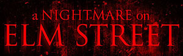
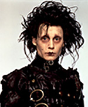
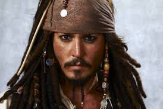
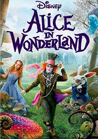
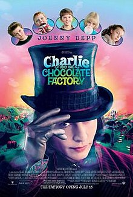

#1
Johnny Depp's first movies was a film called A Nightmare on Elm Street. Personally I do not like scary movies, however this film was what made Depp's career jump out to fame. It is an American film produced in 1984, it was written and directed by Wes Craven. Johnny Depp was considered to be one of the four teenagers that lived on a street located in Ohio. This film at a estimated budget cost to be at least $1.8 million. In auditions to this movie, Depp decided to attend and was accepted to be one of the main characters in the movie. The producers were touched by the way he acted and the naturality that he had, they said that he "had tiny features of a hero". As a result Depp got the role of Glen, which eventually gained the views of alot more fame coming his way.
#2
Edward Siccorhands is a movie that was brought out in 1990, it is based on a dark romantic fantasy film directed by Tim Burton. Depp is portrayed as a young man named Edward who is an unfinished creation with scissor hands. Throughout this movie, he is brought to a home in a suburban area in where he falls in love with thier teenage daughter, Kim. Burton (the director) always tended to go towards Johnny Depp when wanting to film this movie. He had seen him acting and rising in his popular performance in 21-Jump Street. When Depp knew that he was getting the opportunity to be "Edward" he felt very special; the reason why is because he connected very much emotionally with the character. Feeling left out was something that was always a problem when he was younger.
The Pirates of The Caribbean is a very well known movie thoughout all the younger generations. It is a series of fantasy films that are produced by Jerry Bruckheimer and based on Walt Disney's theme park ride. In this movie Johnny Depp is captain Jack Sparrow, he is meant to save the life of Will Turner which is with cursed pirates. The most recent movie was brought out in 2017, however the series of the Pirates of the Caribbean have been going on since 2007. The first movie called "The Curse of the Balck Pearl" recieved many positive reviews and grossed $654 million dollars worlwide. After production realized that the movie was very good, they immediantly started to work on more content for the public. The rest of the movies (series) are: "The Dead Man's Chest", "At Worl's End", "On Stranger Tides", and "Dead Men Tell No Tales".
The movie Alice in Wonderland is a movie that was produced in 2010; filled with a dark American fantasy adventure also created by Tim Burton. Some very well known actors that participate throughout this film is Johnny Depp as the " Mad Hater" and Anne Hathaway as "Alice". Although the 2010 film was the first one to come out in theatres, there is also a second movie that was released in 2016 that is called Alice Through the Looking Glass. Alice, the protagonisgt of the film is meant to fight the jabberwocky in order to give back the White Queen back her throne. The 2010 film was produced with the help of Walt Disney Pictures and shot in the United Kingdom and the United States. When the movie was out to the public it revieved alot of reviews specially for the effects the movie had. Johnny Depp was very well known because although he has the role of a weird person, his intentions are good and connect with alot of people. The love and care that he transmitts throughout the movie is something that many can feel. Depp was definetely the right person to choose for this character.
Charlie and the Chocolate Factory
Charlie and the Chocolate Factory is a very classic film that everybody has seen for sure, produced in 2005 its definetely a movie that involves alot of music and comedy. The film stars are Johnny Depp as Willy Wonka and Freddie Highmore as Charlie Bucket. Charlie and the Chocolate Factory earned about $56,178,450 during in openening weekensm and grossed about $26,458,076 around thr United States. For Depp it was definetely an adventure and a change from his characters. He was able to use comedy while interpreting Charlie.
{kind=link}